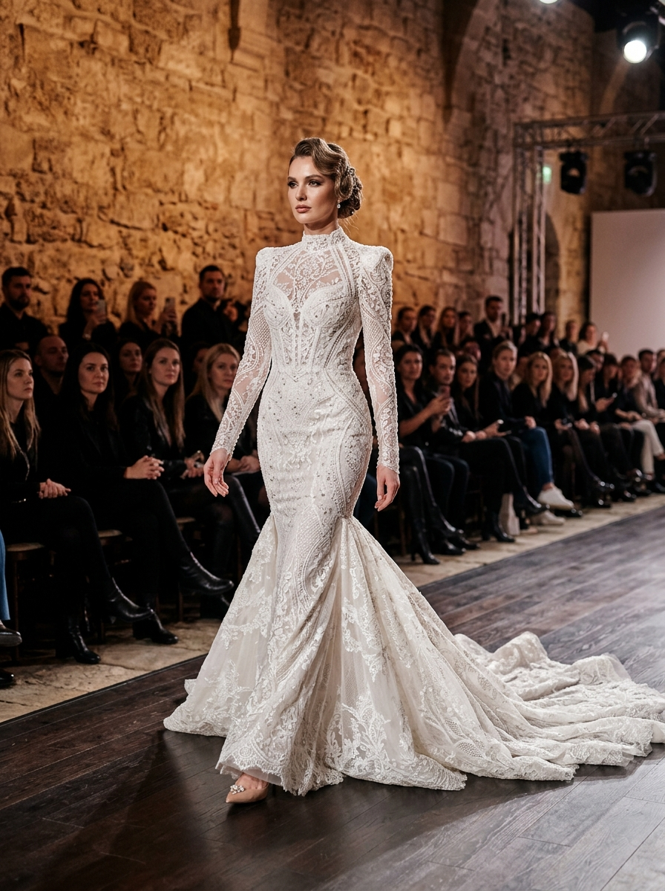

Exclusividade Regional
Ucrânia · Alta-Costura
Pollardi
Trazida com exclusividade para Brasília pela Pérola Noivas, a grife ucraniana Pollardi é aclamada pelo design audacioso, silhuetas marcantes e tecidos arquitetônicos desenvolvidos pela própria maison.
Consultar Coleção Pollardi